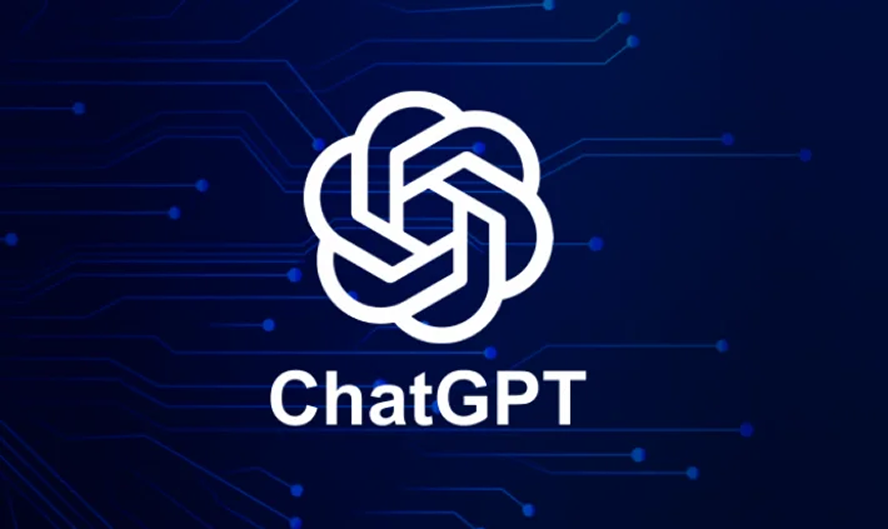
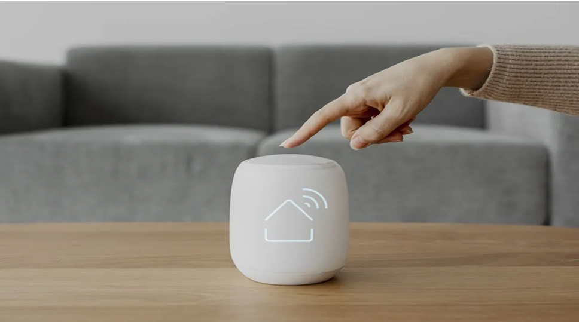

ChatGPT poderá avisar polícia se adolescente estiver com ideias suicidas, diz OpenAI

A OpenAI anunciou nesta terça-feira (16) que o ChatGPT poderá acionar autoridades se identificar que adolescentes estão com pensamentos suicidas durante o uso da ferramenta de inteligência artificial.
A medida faz parte de um pacote de proteção para menores de 18 anos. A empresa também vai implementar verificação de idade e ferramentas de controle parental.
As novidades foram divulgadas pela OpenAI e pelo CEO Sam Altman em comunicados publicados nesta terça-feira.
“Se um usuário menor de 18 anos estiver com ideias suicidas, tentaremos entrar em contato com os pais do usuário e, se não for possível, entraremos em contato com as autoridades em caso de perigo iminente”, disse Altman.
Confira a matéria completa em:
ChatGPT poderá avisar polícia se adolescente estiver com ideias suicidas
Internet das Coisas: o que é, como funciona e exemplos de uso

A Internet das Coisas ou IoT é uma tecnologia que permite conectar dispositivos do cotidiano à Internet e computadores. Isso possibilita o controle, a comunicação e a interação entre eles.
O criador da IOT e pesquisador britânico, Kevin Ashton, descreveu que “se tivéssemos computadores que soubessem de tudo o que há para saber sobre coisas, usando dados que foram colhidos, sem qualquer interação humana, seríamos capazes de monitorar e mensurar tudo, reduzindo o desperdício, as perdas e o custo.”
Ela auxilia uma empresa e otimiza as suas ações, além de reduzir os custos e automatizar os processos, como afirmou Kevin.
Entenda o que é Internet das Coisas, como ela funciona e alguns exemplos de uso no dia a dia de pessoas e empresas.
A Internet das Coisas (IoT) é o conceito que descreve a conexão de objetos do cotidiano à internet, permitindo que eles coletem, troquem e processem dados de forma integrada. Esses dispositivos, como eletrodomésticos, aplicativos, carros e sensores, funcionam por meio de redes sem fio (Wi-Fi, Bluetooth etc.) e armazenam ou acessam informações na nuvem.
Segundo Sergio Luiz Stevan Junior, qualquer dispositivo conectado pode ser identificado por um endereço IP e, assim, comunicar-se com outros, ampliando as possibilidades de automação, monitoramento e interação entre “coisas” conectadas.
Confira a matéria completa em:
Internet das Coisas: o que é, como funciona e exemplos de uso